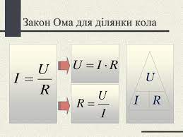

Закон Ома
Німецький учений Георг Сімон Ом (1787–1854) у 1826 р експериментально встановив, що сила струму в провіднику прямо пропорційна напрузі на кінцях провідника. Сила струму в провіднику залежить не тільки від напруги на його кінцях, але й від властивостей самого провідника. Залежність сили струму від властивостей провідника пояснюється тим, що напрямленому руху вільних електронів у металевому провіднику протидіють їхні хаотичні зіткнення з йонами кристалічної решітки, що перебувають у стані теплового руху. Ця протидія призводить до зменшення швидкості напрямленого руху заряджених частинок, тобто до зменшення сили струму в колі.